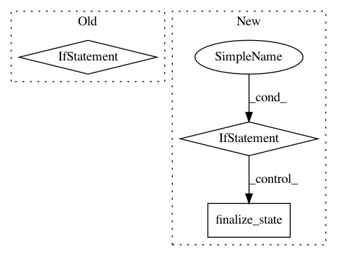

afd954e65f15aea4d438d0a219136fc4a63a573d,tensorflow/python/keras/layers/preprocessing/normalization.py,Normalization,build,#Normalization#Any#,120
Before Change
super(Normalization, self).build(input_shape)
if (self.mean_val is not None and self.variance_val is not None):
mean_val = self.mean_val * np.ones(mean_and_var_shape)
variance_val = self.variance_val * np.ones(mean_and_var_shape)
self.set_weights([mean_val, variance_val])
self.built = True
def update_state(self, data):
if not self.built:
After Change
]
mean_and_var_shape = tuple(input_shape[d] for d in self._keep_axis)
if self.input_mean is None:
self.adapt_mean = self.add_weight(
name="mean",
shape=mean_and_var_shape,
dtype=self.dtype,
initializer=init_ops.zeros_initializer,
trainable=False)
self.adapt_variance = self.add_weight(
name="variance",
shape=mean_and_var_shape,
dtype=self.dtype,
initializer=init_ops.ones_initializer,
trainable=False)
self.count = self.add_weight(
name="count",
shape=(),
dtype=dtypes.int64,
initializer=init_ops.zeros_initializer,
trainable=False)
self.finalize_state()
else:
// In the no adapt case, make constant tensors for mean and variance with
// proper broadcast shape for use during call.
mean = self.input_mean * np.ones(mean_and_var_shape)
variance = self.input_variance * np.ones(mean_and_var_shape)
mean = array_ops.reshape(mean, self._broadcast_shape)
variance = array_ops.reshape(variance, self._broadcast_shape)
self.mean = math_ops.cast(mean, self.dtype)
self.variance = math_ops.cast(variance, self.dtype)
def update_state(self, data):
if self.input_mean is not None:
raise ValueError(
"Cannot `adapt` a Normalization layer that is initialized with "
In pattern: SUPERPATTERN
Frequency: 3
Non-data size: 3
Instances
Project Name: tensorflow/tensorflow
Commit Name: afd954e65f15aea4d438d0a219136fc4a63a573d
Time: 2021-05-04
Author: mattdangerw@google.com
File Name: tensorflow/python/keras/layers/preprocessing/normalization.py
Class Name: Normalization
Method Name: build
Project Name: tensorflow/tensorflow
Commit Name: afd954e65f15aea4d438d0a219136fc4a63a573d
Time: 2021-05-04
Author: mattdangerw@google.com
File Name: tensorflow/python/keras/layers/preprocessing/discretization.py
Class Name: Discretization
Method Name: build
Project Name: tensorflow/tensorflow
Commit Name: afd954e65f15aea4d438d0a219136fc4a63a573d
Time: 2021-05-04
Author: mattdangerw@google.com
File Name: tensorflow/python/keras/layers/preprocessing/normalization.py
Class Name: Normalization
Method Name: merge_state